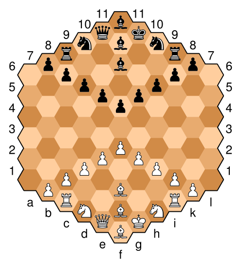
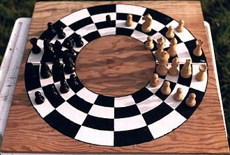
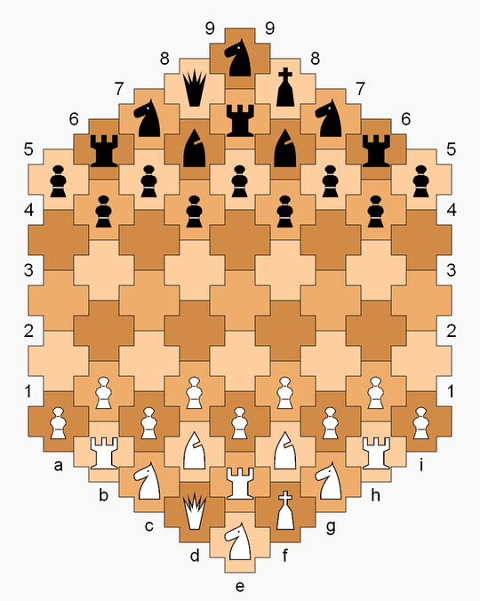

Standard rules on a variant board
Balbo's Game
The starting setup is as shown. All the rules of chess apply, except there is no castling, and promotion squares are specially defined:
- At the end of the d- through h-files, pawns have normal promotion options.
- At the end of the c- and i-files, pawns may promote only to a bishop or knight.
- At the end of the outer four files, pawns may not promote.
Brusky's hexagonal chess
Invented by Yakov Brusky in 1966. The game features an irregular hexagon board comprising 84 cells. Piece movement rules are the same as Gliński's chess, except for the pawns, of which there are ten instead of Gliński's nine. Other differences from Gliński's: castling is permitted; kings start on opposite wings of the board; and draws are worth half a point.
Circular chess
The starting position is essentially obtained from that of orthodox chess by cutting the board in half and bending the two halves to join at the ends. Two lines are marked on opposite sides of the board, and each set of pieces is positioned so as to straddle this line. The king and queen start on the innermost ring, with, as is the case in square chess, the queen on a square of the same colour; the bishops start in the second ring from the centre, the knights on the third and the rooks on the outermost ring. The pawns are positioned in front of the pieces.
Cross chess
Cross chess is a chess variant invented by George R. Dekle Sr. in 1982. The game is played on a board comprising 61 cross-shaped cells, with players each having an extra rook, knight, and pawn in addition to the standard number of chess pieces. Pieces move in the context of a gameboard with hexagonal cells, but Cross chess has its own definition of ranks and diagonals.
